Volumetric wavelet Data Processing
This numerical tour explores volumetric (3D) data processing.
Contents
Installing toolboxes and setting up the path.
You need to download the following files: signal toolbox and general toolbox.
You need to unzip these toolboxes in your working directory, so that you have toolbox_signal and toolbox_general in your directory.
For Scilab user: you must replace the Matlab comment '%' by its Scilab counterpart '//'.
Recommandation: You should create a text file named for instance numericaltour.sce (in Scilab) or numericaltour.m (in Matlab) to write all the Scilab/Matlab command you want to execute. Then, simply run exec('numericaltour.sce'); (in Scilab) or numericaltour; (in Matlab) to run the commands.
Execute this line only if you are using Matlab.
getd = @(p)path(p,path); % scilab users must *not* execute this
Then you can add the toolboxes to the path.
getd('toolbox_signal/'); getd('toolbox_general/');
For Scilab user (otherwise there is not enough memory). WARNING: you should extend the stack size only ONCE.
extend_stack_size(10);
3D Volumetric Datasets
We load a volumetric data.
name = 'vessels'; options.nbdims = 3; M = read_bin(name, options); M = rescale(M); % size of the image (here it is a cube). n = size(M,1);
We can display some horizontal slices.
slices = round(linspace(10,n-10,4)); clf; for i=1:length(slices) s = slices(i); imageplot( M(:,:,s), strcat(['Z=' num2str(s)]), 2,2,i ); end

We can display an isosurface of the dataset (here we sub-sample to speed up the computation).
sel = 1:2:n;
clf;
isosurface( M(sel,sel,sel), .5);
axis('off');
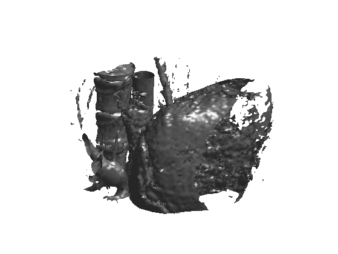 3D Haar Transform
An isotropic 3D Haar transform recursively extract details wavelet coefficients by performing local averages/differences along the X/Y/Z axis.
We apply a step of Haar transform in the X/Y/Z direction
% initialize the transform MW = M; % average/difference along X MW = cat3(1, (MW(1:2:n,:,:)+MW(2:2:n,:,:))/sqrt(2), (MW(1:2:n,:,:)-MW(2:2:n,:,:))/sqrt(2) ); % average/difference along Y MW = cat3(2, (MW(:,1:2:n,:)+MW(:,2:2:n,:))/sqrt(2), (MW(:,1:2:n,:)-MW(:,2:2:n,:))/sqrt(2) ); % average/difference along Z MW = cat3(3, (MW(:,:,1:2:n)+MW(:,:,2:2:n))/sqrt(2), (MW(:,:,1:2:n)-MW(:,:,2:2:n))/sqrt(2) );
Display a horizontal and vertical slice to see the structure of the coefficients.
clf; imageplot(MW(:,:,30), 'Horizontal slice', 1,2,1); imageplot(squeeze(MW(:,30,:)), 'Vertical slice', 1,2,2);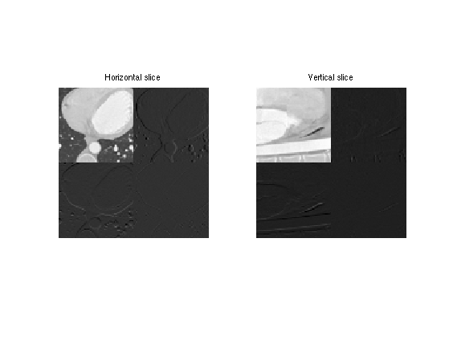
Exercice 1: (check the solution) Implement the forward wavelet transform by iteratively applying these transform steps to the low pass residual.
exo1;
Volumetric Data Haar Approximation
An approximation is obtained by keeping only the largest coefficients.
We threshold the coefficients to perform m-term approximation.
% number of kept coefficients m = round(.01*n^3); MWT = perform_thresholding(MW, m, 'largest');
Exercice 2: (check the solution) Implement the backward transform to compute an approximation M1 from the coefficients MWT.
exo2;
Display the approximation as slices.
s = 30; clf; imageplot( M(:,:,s), 'Original', 1,2,1 ); imageplot( clamp(M1(:,:,s)), 'Approximation', 1,2,2 );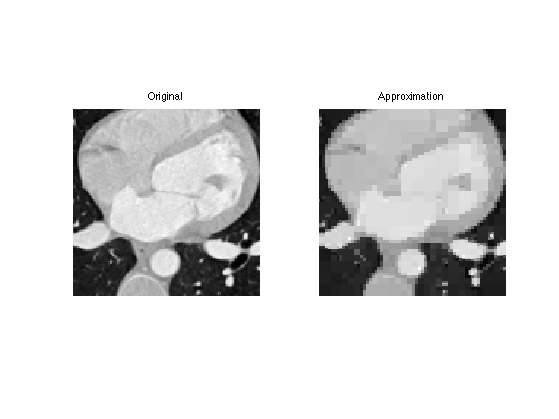
Display the approximated isosurface.
sel = 1:2:n;
clf;
isosurface( M1(sel,sel,sel), .5);
axis('off');
Linear Volumetric Denoising
Linear denoising is obtained by low pass filtering.
We add a Gaussian noise to the image.
% noise level.
sigma = .06;
Mnoisy = M + sigma*randn(n,n,n);
Display slices of the noisy data.
clf; imageplot(Mnoisy(:,:,n/2),'X slice', 1,2,1); imageplot(squeeze(Mnoisy(:,n/2,:)),'Y slice', 1,2,2);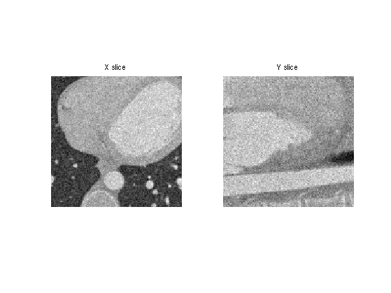
A simple denoising method performs a linear filtering of the data.
We build a Gaussian filter of width sigma.
% construct a 3D grid x = -n/2:n/2-1; [X,Y,Z] = ndgrid(x,x,x); % gaussian filter s = 2; % width h = exp( -(X.^2 + Y.^2 + Z.^2)/(2*s^2) ); h = h/sum(h(:));
The filtering is computed over the Fourier domain.
Mh = real( ifftn( fftn(Mnoisy) .* fftn(fftshift(h)) ) );
Display denoised slices.
i = 40; clf; imageplot( Mnoisy(:,:,i), 'Noisy', 1,2,1 ); imageplot( Mh(:,:,i), 'Denoised', 1,2,2 );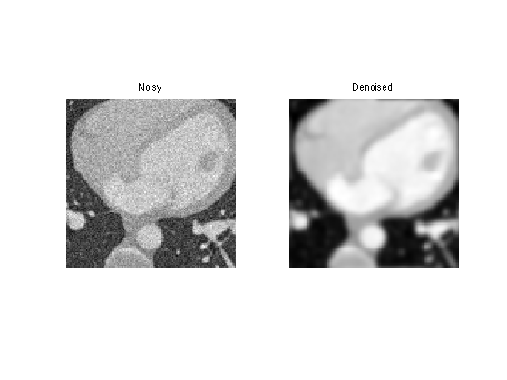
Display denoised iso-surface.
sel = 1:2:n;
clf;
isosurface( Mh(sel,sel,sel), .5);
axis('off');
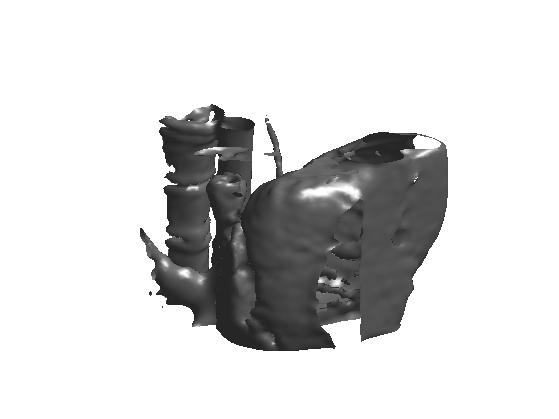 Exercice 3: (check the solution) Select the optimal blurring width s to reach the smallest possible SNR. Keep the optimal denoising Mblur
exo3;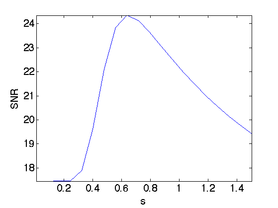
Display optimally denoised iso-surface.
sel = 1:2:n; clf; isosurface( Mblur(sel,sel,sel), .5); axis('off'); title(['Filtering, SNR=' num2str(snr(M,Mblur),3) 'dB']);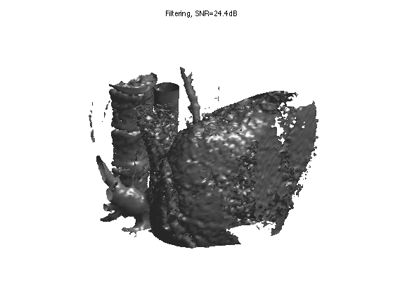
Non-Linear Wavelet Volumetric Denoising
Denoising is obtained by removing small amplitude coefficients that corresponds to noise.
Exercice 4: (check the solution) Perforn Wavelet denoising by thresholding the wavelet coefficients of Mnoisy. Test both hard thresholding and soft thresholding to determine the optimal threshold and the corresponding SNR. Record the optimal result Mwav.
exo4;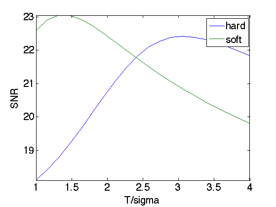
Display denoised iso-surface with optimal soft thresholding.
sel = 1:2:n; clf; isosurface( Mwav(sel,sel,sel), .5); title(['Soft thresholding, SNR=' num2str(snr(M,Mwav),3) 'dB']); axis('off');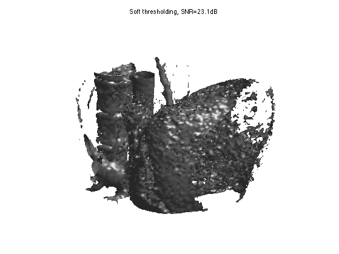
Orthogonal wavelet thresholdings suffers from blocking artifacts. This can be aleviated by performing a cycle spinning denoising, which average the denosing result of translated version of the signal.
A typical cycle spinning process is like this.
% maximum translation w = 4; % list of translations [dX,dY,dZ] = ndgrid(0:w-1,0:w-1,0:w-1); % initialize spinning process Mspin = zeros(n,n,n); % spin for i=1:w^3 % shift the image MnoisyC = circshift(Mnoisy, [dX(i) dY(i) dZ(i)]); % denoise the image to get a result M1 M1 = MnoisyC; % replace this line by some denoising % shift inverse M1 = circshift(M1, -[dX(i) dY(i) dZ(i)]); % average the result Mspin = Mspin*(i-1)/i + M1/i; end
Exercice 5: (check the solution) Implement cycle spinning hard thresholding with T=3*sigma.
exo5;
Display denoised iso-surface.
sel = 1:2:n; clf; isosurface( Mspin(sel,sel,sel), .5); title(['Cycle spinning, SNR=' num2str(snr(M,Mspin),3) 'dB']); axis('off');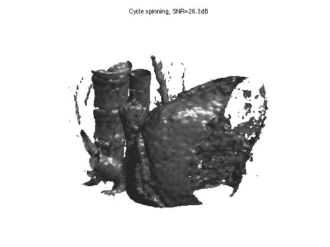
Higher Order Daubechies Wavelets
Similarely to the Haar transform, wavelets with more vanishing moments are obtained with filtering and subsampling (pyramidal algorihtm).
First we create the filters for 4 vanishing moments.
[h,g] = compute_wavelet_filter('Daubechies',2*4);
Then we initialize the wavelet transform with the 3D image itself, and set the current scale.
MW = M; j = log2(n)-1;
We transform by filtering + sub-sampling the low pass residual along the three directions.
A = MW(1:2^(j+1),1:2^(j+1),1:2^(j+1)); for d=1:3 a = cat(d, subsampling(cconv(A,h,d),d), subsampling(cconv(A,g,d),d) ); end MW(1:2^(j+1),1:2^(j+1),1:2^(j+1)) = A;
Error using @(a,b)real(ifft2(fft2(a).*fft2(b)))
Too many input arguments.
Error in index (line 290)
a = cat(d, subsampling(cconv(A,h,d),d), subsampling(cconv(A,g,d),d) );
Exercice 6: (check the solution) Implement the full 3D forward wavelet transform by applying these steps for decaying scales j toward 0.
exo6;
Threshold the coefficients.
MWT = perform_thresholding(MW,m,'largest');
Display the coefficients and thresholded coefficients for one slice.
clf; subplot(1,2,1); plot_wavelet(MW(:,:,n/8)); subplot(1,2,2); plot_wavelet(MWT(:,:,n/8));
Initialize the backward transform.
M1 = MWT; j = 0;
Undo one step of the wavelet transform. Note: subselectdim(A,sel,1) is equivalent to A(sel,:,:) while subselectdim(A,sel,2) is equivalent to A(:,sel,:).
A = M1(1:2^(j+1),1:2^(j+1),1:2^(j+1)); for d=1:3 W = subselectdim(A,2^j+1:2^(j+1),d); A = subselectdim(A,1:2^j,d); A = cconv(upsampling(A,d),reverse(h),d) + cconv(upsampling(W,d),reverse(g),d); end M1(1:2^(j+1),1:2^(j+1),1:2^(j+1)) = A;
Exercice 7: (check the solution) Implement the full 3D backward wavelet transform by applying these steps for increasing scales j.
exo7;
Display approximated iso-surface.
sel = 1:2:n; clf; isosurface( M1(sel,sel,sel), .5); title(['Soft thresholding, SNR=' num2str(snr(M,M1),3) 'dB']); axis('off');
Denoising Daubechies Wavelets
Better denoising results are obtined by thresholding orthogonal wavelet coefficients.
Exercice 8: (check the solution) Implement denoising by soft and hard thresholding Daubechies wavelet coefficients.
exo8;
Display denoised iso-surface with optimal soft thresholding.
sel = 1:2:n; clf; isosurface( Mwav(sel,sel,sel), .5); title(['Soft thresholding, SNR=' num2str(snr(M,Mwav),3) 'dB']); axis('off');
Exercice 9: (check the solution) Implement cycle spinning hard thresholding with Daubechies wavelets with T=3*sigma.
exo9;
Display denoised iso-surface.
sel = 1:2:n; clf; isosurface( Mspin(sel,sel,sel), .5); title(['Cycle spinning, SNR=' num2str(snr(M,Mspin),3) 'dB']); axis('off');